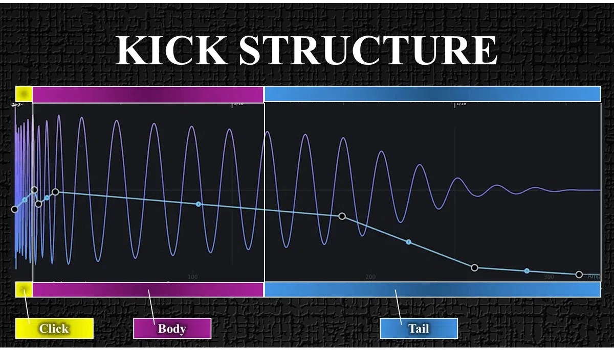
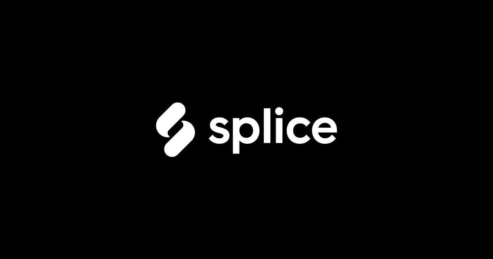

理解ではなく、
“選択”のフェーズへ
前の STEP で、キックの構造とジャンルごとの違いを理解しました。
ここからは“理解”ではなく“選択”のフェーズです。
候補を5つに絞る
Splice や手持ちから、5つ以内に絞り込む。
構造で評価する
Click / Body / Tail を1〜5点で採点する。
1つに決める
無加工で一番気持ちいいものを選ぶ。
キックの3要素おさらい
この3要素のバランスで、ジャンルが決まる

Click
2〜4kHz ／ 音の顔強ければ前に出る。弱ければ輪郭がぼやける。
「ドン」判定：ド がはっきり聞こえる
Body
120〜200Hz ／ 骨格太ければ音は立ち、弱ければ全体が痩せる。
「ドン」判定：オ が太く聞こえる
Tail
40〜60Hz ／ 呼吸長ければ深く沈み、短ければタイトに切れる。
「ドン」判定：ン が残る
詳しくは STEP2-1 を参照してください。
候補を5つに絞る
まず、Splice で候補を探します。検索ワードはジャンル名＋キックの性格で絞る。

サブスク Sample Library ── 候補集めに使う Splice ロイヤリティフリーのサンプルライブラリ。キックの候補集めはここが最短。 splice.comSplice 検索ワード
ジャンルが違う人は、ジャンル名だけ変えてください。
候補は必ず5つ以内に絞る
NG ── 10個以上
脳が判断できなくなる
- 比較の基準が保てない
- 「なんとなく良さそう」で選んでしまう
OK ── 5つ以内
構造で比較できる
- Click / Body / Tail で並べて比べられる
- プロは「少ない選択肢で勝負」する
人間の脳は選択肢が増えるほど判断できなくなります。 プロが「少ない選択肢で勝負する」のは、このためです。
候補が5つに絞れたら、手順①はクリアです。
ジャンル別キックバランス表
Click / Body / Tail の配分でジャンルが決まる
候補を絞るときの参考にしてください。
| ジャンル | Click | Body | Tail | 一言 |
|---|---|---|---|---|
| Melodic Techno | ★★★★★ | ★★★★★ | ★★★★★ | 深く・太く・包み込む |
| House | ★★★★★ | ★★★★★ | ★★★★★ | 丸くて太くて安定 |
| Deep House | ★★★★★ | ★★★★★ | ★★★★★ | 低く・柔らかく・沈む |
| Tech House | ★★★★★ | ★★★★★ | ★★★★★ | タイトで前に出る |
| Progressive House | ★★★★★ | ★★★★★ | ★★★★★ | 安定感と抜けの両立・Bodyを軸にバランス型 |
| Hard Techno | ★★★★★ | ★★★★★ | ★★★★★ | 硬く・速く・前に出る |
- ★★★★★（5） ── 非常に強い・主役級
- ★★★☆☆（3） ── 中程度・バランス型
- ★☆☆☆☆（1） ── 控えめ・脇役
※ 緑の行が、このロードマップで進める Melodic Techno です。
構造で評価して、
1つに決める
5つの候補を DAW に並べて、同じ音量で鳴らします。
そして各キックを Click / Body / Tail で1〜5点で採点する。
「ドン」と声に出してイメージしてください。
- ド がはっきり聞こえる → Click が強い
- オ が太く聞こえる → Body が強い
- ン が残る → Tail が強い
これだけで、キックの性格が一瞬でわかります。
決め方の5ステップ
あとは、STEP2-1 で確認したジャンルの理想バランスに最も近いものを選ぶ。
無加工で気持ちいいか？
- 人間の耳は正直
- 理屈より、体が反応するものを選ぶ
- 加工前から抜けているものが正解
1つに決まったら、手順②はクリアです。
よくある失敗
── これをやると後で詰む
→ ベースと喧嘩して地獄へ。
Bodyが薄いため低域が安定せず、EQでどう処理してもローエンドが濁る。
→ BPM128 で低域が引きずる。
次のビートと干渉し、ミックスすると低域がもたついて聞こえる。
→ サブを足してもスカスカのまま。
骨格がないため、どれだけ足しても曲の重量が生まれない。
無加工で最初の1発から気持ちいいか、だけ見てください。
この STEP で手に入れたもの
- 候補を5つに絞った
- 構造（Click / Body / Tail）で評価した
- 1つに決めた
つまり、“キックが決まった状態”になりました。
ローエンド設計の土台が決まっています。
配置とミックスのフェーズへ
次の STEP では、こうしていきます。
4小節に配置する
決めたキックを4小節ループに置く。
mvMeter でゲイン調整
VU基準に合わせて音量を整える。
フェーダーで −6dB
ヘッドルームを準備する。
“配置とミックス”のフェーズです。
押すとHUBの進捗％に反映されます。